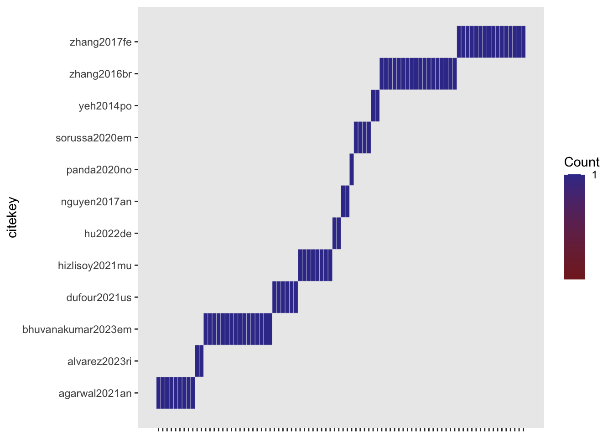
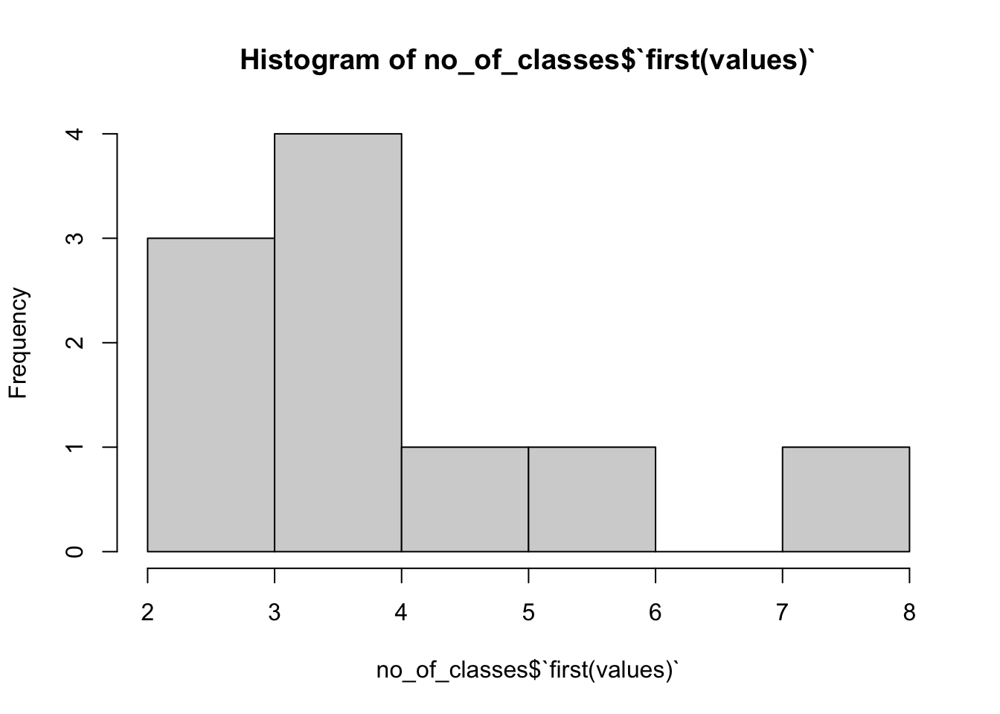

source(here::here('R/build-df.R'))
source(here::here('R/format-study-results.R'))
source(here::here('R/parse-model-output.R'))Preprocessing
This assumes that the data has been parsed from the BibTeX files into table and exported as CSV file.
Read annotated data
# get metaMER df:
meta_df <- get_metaMER_df(path_2_studies = here::here('studies'))
# get included studies
included_studies <- meta_df[which(
!stringr::str_detect(meta_df$final_notes, '!EXCL!')),] |>
dplyr::tibble()Recoded
# get studies re-coded (currently identifiable by presence of bind_field.)
recoded_studies <- included_studies[which(stringr::str_detect(
included_studies$model_rate_emotion_values,
'bind_field')),] Add unique identifiers
metaMER_results <-
do.call(
rbind,
lapply(1:nrow(recoded_studies),
function(x) get_study_results(recoded_studies[x,])
)
)
# add unique identifiers
unique_id <- apply(metaMER_results[,c('citekey',
'library_id',
'model_id',
'feature_id',
'data_id',
'experiment_id')],
1,
paste0,
collapse = '-'
)
metaMER_results$unique_id <- stringr::str_remove_all(unique_id,
' ')
metaMER_results <- metaMER_results |> dplyr::select(unique_id,
dplyr::everything())
metaMER_results |> dplyr::tibble()# A tibble: 1,114 × 19
unique_id citekey journal stimulus_genre model_category stimulus_n feature_n
<chr> <chr> <chr> <chr> <chr> <chr> <chr>
1 agarwal20… agarwa… " IE… " popular, hi… classification " ISMIR20… " 'eight…
2 agarwal20… agarwa… " IE… " popular, hi… classification " ISMIR20… " 'eight…
3 agarwal20… agarwa… " IE… " popular, hi… classification " ISMIR20… " 'eight…
4 agarwal20… agarwa… " IE… " popular, hi… classification " ISMIR20… " 'eight…
5 agarwal20… agarwa… " IE… " popular, hi… classification " ISMIR20… " 'eight…
6 agarwal20… agarwa… " IE… " popular, hi… classification " ISMIR20… " 'eight…
7 agarwal20… agarwa… " IE… " popular, hi… classification " ISMIR20… " 'eight…
8 agarwal20… agarwa… " IE… " popular, hi… classification " ISMIR20… " 'eight…
9 agarwal20… agarwa… " IE… " popular, hi… classification " ISMIR20… " 'eight…
10 agarwal20… agarwa… " IE… " popular, hi… classification " ISMIR20… " 'eight…
# ℹ 1,104 more rows
# ℹ 12 more variables: participant_n <chr>, feature_source <chr>,
# feature_reduction_method <chr>, library_id <chr>, model_id <chr>,
# feature_id <chr>, data_id <chr>, experiment_id <chr>, dimension <chr>,
# measure <chr>, statistic <chr>, values <dbl>Summarise annotated data (optional)
print(knitr::kable(table(metaMER_results$citekey,metaMER_results$dimension)))
print(knitr::kable(table(metaMER_results$citekey,metaMER_results$model_id)))
print(knitr::kable(table(metaMER_results$citekey,metaMER_results$feature_id)))
print(knitr::kable(table(metaMER_results$citekey,metaMER_results$data_id)))Classify modelling techniques used
Classify stimulus genres
Classify journals
Summarise all
print(knitr::kable(table(metaMER_results$model_class_id)))| Var1 | Freq |
|---|---|
| Flexible Discriminants | 339 |
| Kernel Smoothing, Additive and KNN | 54 |
| Linear Methods | 257 |
| Neural Nets | 354 |
| Random Forests | 85 |
| Unclassified | 25 |
print(knitr::kable(table(metaMER_results$model_class_id,metaMER_results$model_category)))| classification | regression | |
|---|---|---|
| Flexible Discriminants | 155 | 184 |
| Kernel Smoothing, Additive and KNN | 18 | 36 |
| Linear Methods | 59 | 198 |
| Neural Nets | 190 | 164 |
| Random Forests | 69 | 16 |
| Unclassified | 25 | 0 |
cat(paste("We have", nrow(metaMER_results), "observations"))We have 1114 observations
cat(paste("\nWe have", length(unique(metaMER_results$citekey)), "studies"))We have 34 studies
cat(paste("\nWhere", length(unique(metaMER_results$citekey[metaMER_results$model_category=='regression'])), "are regression studies"))Where 22 are regression studies
cat(paste("\nWhere", length(unique(metaMER_results$citekey[metaMER_results$model_category=='classification'])), "are classification studies"))Where 12 are classification studies
# note that we have some classification studies that also do regression and vice versa?
# THIS IS CORRECT (updated 24 October 2024):
# [1] "We have 1284 observations"
# [1] "We have 36 studies"
# [1] "Where 22 are regression studies"
# [1] "Where 14 are classification studies"
# Add a check for these properties ToDo2024-10-21: Update studies with multiple unique_ids due to multiple stats reported
metaMER_results <- metaMER_results |>
dplyr::filter(!(citekey == "zhang2017fe" & statistic == "mean"),
!(citekey == "zhang2016br" & statistic == "mean"),
!(citekey == "zhang2016br" & is.na(values)),
!(citekey == "coutinho2017sh" & measure == "ccc"),
# Include only results for energy arousal
!(citekey == "wang2022cr" & dimension == "tension arousal"),
!(citekey == "wang2021ac" & dimension == "tension arousal"),
!(citekey == "deng2015em" & dimension == "resonance"))Deal with repeated experiment IDs in hu2017cr
# get citation keys (all currently say experiment 1)
hu2017models <- metaMER_results[str_detect(metaMER_results$citekey,
"hu2017cr"),]$unique_id
# replace the last digit with 1:4 (representing each experiment)
hu2017models_replacement <- paste0(
substr(hu2017models,
1,
nchar(hu2017models) - 1),
1:4
)
# overwrite original values
metaMER_results[metaMER_results$unique_id %in%
hu2017models,]$unique_id <- hu2017models_replacementPull data to analyse regression studies
[1] "yang2021an" "battcock2021in" "beveridge2018po" "chen2017co"
[5] "coutinho2017sh" "deng2015em" "gingras2014be" "grekow2018au"
[9] "grekow2021mu" "griffiths2021am" "hu2017cr" "koh2023me"
[13] "markov2014mu" "orjesek2022en" "saizclar2022pr" "wang2021ac"
[17] "wang2022co" "wang2022cr" "xie2020mu" "xu2021us"
[21] "zhang2019us" "zhang2023mo" [1] 22Remove NAs
R_studies <- R_studies[!is.na(R_studies$values),]Check models aren’t double-counted
length(unique(paste0(R_studies$unique_id, R_studies$dimension)))[1] 292ez::ezDesign(data = R_studies, x = unique_id, y = citekey)+
theme(axis.text.x = element_blank(),
axis.title.x = element_blank())
Homogenise the outcome variable names to valence and arousal
[1] 22Clean feature N field
33.3% 66.6%
236.341 653.000 25% 50% 75%
72 605 653 10% 50% 90%
18 605 3000 Diagnostics
Feature N and genre split
0% 33.3% 66.6% 99.9%
3 21 72 499 0% 33.3% 66.6% 99.9%
15 557 653 6670 Select a summary measure for valence and arousal separately
Note: Before adding feature_n to the summary, they need to be cleaned!
R_studies$citekey <- factor(R_studies$citekey) # 22 unique values
R_studies$dimension <- factor(R_studies$dimension)
R_summary <- summarise(group_by(R_studies,dimension,citekey),valuesMean=mean(values,na.rm=TRUE),valuesMedian=median(values,na.rm=TRUE),valuesMax=max(values,na.rm=TRUE),stimulus_n=first(stimulus_n),studyREF=first(studyREF),model_class_id=first(model_class_id),feature_n=first(feature_n),journal_type=first(journal_type),feature_n=first(feature_n),feature_n_categories=first(feature_n_categories),stimulus_genre_mixed=first(stimulus_genre_mixed),feature_n_complexity_genre=first(feature_n_complexity_genre))`summarise()` has grouped output by 'dimension'. You can override using the
`.groups` argument.print(dim(R_summary))[1] 44 13Visualise Summary on two dimensions
Add variation from within the studies (alternative models)
Plot success across the years
Simple model complexity metric
Ratio of obs./features or just a classification based on feature n (quantiles).
33.3% 66.6%
236.341 653.000 Feature N and genre split
0% 33.3% 66.6% 99.9%
3 21 72 499 0% 33.3% 66.6% 99.9%
15 557 653 6670 Explore feature_n_complexity and model success
Needs to be done from the unsummarised data (R_studies).
Create descriptive table for the manuscript (Table 1, column 1)
TR <- NULL
TR$study_n <- length(unique(R_studies$citekey))
TR$model_n <- nrow(R_studies)
t<-table(R_studies$model_class_id)
t2 <- paste0(names(t),': ', as.numeric(t))
TR$model_types_n <- str_c(t2,collapse = "\n")
TR$feature_Desc <- paste0('Min=',min(R_studies$feature_n,na.rm = TRUE),', Md=',median(R_studies$feature_n,na.rm = TRUE),', Max=', max(R_studies$feature_n,na.rm = TRUE))
TR$stimulus_Desc <- paste0('Min=',min(R_studies$stimulus_n,na.rm = TRUE),', Md=',median(R_studies$stimulus_n,na.rm = TRUE),', Max=', max(R_studies$stimulus_n,na.rm = TRUE))
print(TR)$study_n
[1] 22
$model_n
[1] 204
$model_types_n
[1] "Flexible Discriminants: 50\nKernel Smoothing, Additive and KNN: 12\nLinear Methods: 62\nNeural Nets: 66\nRandom Forests: 14"
$feature_Desc
[1] "Min=3, Md=605, Max=6670"
$stimulus_Desc
[1] "Min=20, Md=324, Max=2486"Export as csv
if (export_decision == TRUE){
write.csv(x = R_studies,file = 'R_studies.csv')
write.csv(x = R_summary,file = 'R_summary.csv')
}Pull data to analyse classification studies
[1] 0[1] 384
accuracy auc f1 fscore fvalue kappa mcc precision
260 4 6 8 2 40 40 12
recall
12 [1] 384 23
acc lower mean median null pvalue upper
160 40 16 48 40 40 40 [1] 12[1] 12Average across valence and arousal for VA classification
#length(unique(paste0(C_studies$unique_id, C_studies$dimension)))
ez::ezDesign(data = C_studies, x = unique_id, y = citekey)+
theme(axis.text.x = element_blank(),
axis.title.x = element_blank())va_studies <- c("zhang2016br", "hu2022de")
va_acc <- C_studies |>
filter(citekey %in% va_studies) |>
group_by(unique_id, measure, statistic) |>
mutate(values = mean(values),
accuracy_converted_to_mcc = mean(accuracy_converted_to_mcc))
va_acc$dimension <- "classification"
va_acc <- va_acc |> distinct()
C_studies <- C_studies[!C_studies$citekey %in% va_studies,]
C_studies <- rbind(C_studies, va_acc)Revisualize studies
length(unique(paste0(C_studies$unique_id, C_studies$dimension)))[1] 86ez::ezDesign(data = C_studies, x = unique_id, y = citekey)+
theme(axis.text.x = element_blank(),
axis.title.x = element_blank())
Get the number of categories in the classification task
tmp <- metaMER_results
tmp2 <- tmp[which(tmp$statistic=='n'),]
no_of_classes <- summarise(group_by(tmp2,citekey),first(values))
print(no_of_classes)# A tibble: 10 × 2
citekey `first(values)`
<chr> <dbl>
1 agarwal2021an 4
2 alvarez2023ri 4
3 bhuvanakumar2023em 2
4 dufour2021us 5
5 hizlisoy2021mu 3
6 hu2022de 2
7 nguyen2017an 6
8 panda2020no 4
9 sorussa2020em 8
10 yeh2014po 4hist(no_of_classes$`first(values)`)
rm(tmp,tmp2)Homogenise the stimulus N
Diagnostics
Select a summary measure for valence and arousal separately
C_studies$citekey <- factor(C_studies$citekey)
C_summary <- summarise(group_by(C_studies,citekey),valuesMean=mean(values,na.rm=TRUE),valuesMedian=median(values,na.rm=TRUE),valuesMax=max(values,na.rm=TRUE),stimulus_n=first(stimulus_n),studyREF=first(studyREF),model_class_id=first(model_class_id), stimulus_genre_mixed=first(stimulus_genre_mixed),journal_type = first(journal_type))Visualise Summary
Simple model complexity metric based on feature_n
Explore feature_n_complexity and model success
Needs to be done from the unsummarised data (C_studies).
Create descriptive table for the manuscript (Table 1, column 2)
CA: I think this should be correct, though may need to update after averaging across VA for some classification studies (zhang2016, hu2022)
TC <- NULL
TC$study_n <- length(unique(C_studies$citekey))
TC$model_n <- nrow(C_studies)
t<-table(C_studies$model_class_id)
t2 <- paste0(names(t),': ', as.numeric(t))
TC$model_types_n <- str_c(t2,collapse = "\n")
TC$feature_Desc <- paste0('Min=',min(C_studies$feature_n,na.rm = TRUE),', Md=',median(C_studies$feature_n,na.rm = TRUE),', Max=', max(C_studies$feature_n,na.rm = TRUE))
TC$stimulus_Desc <- paste0('Min=',min(C_studies$stimulus_n,na.rm = TRUE),', Md=',median(C_studies$stimulus_n,na.rm = TRUE),', Max=', max(C_studies$stimulus_n,na.rm = TRUE))
print(TC)$study_n
[1] 12
$model_n
[1] 86
$model_types_n
[1] "Flexible Discriminants: 26\nKernel Smoothing, Additive and KNN: 2\nLinear Methods: 13\nNeural Nets: 25\nRandom Forests: 10\nUnclassified: 10"
$feature_Desc
[1] "Min=8, Md=126, Max=8904"
$stimulus_Desc
[1] "Min=124, Md=300, Max=5192"Export as csv
if (export_decision == TRUE){
write.csv(x = C_studies,file = 'C_studies.csv')
write.csv(x = C_summary,file = 'C_summary.csv')
}